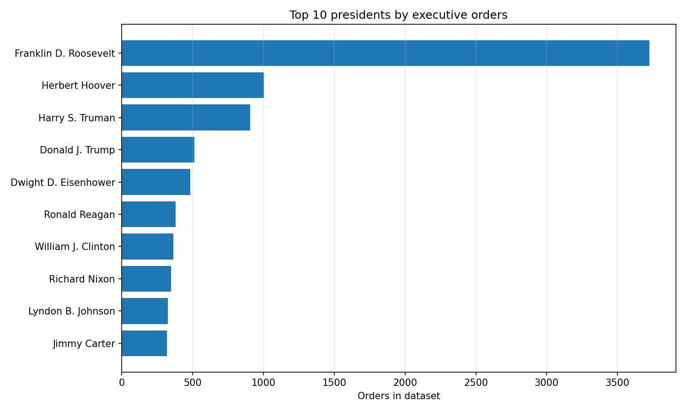
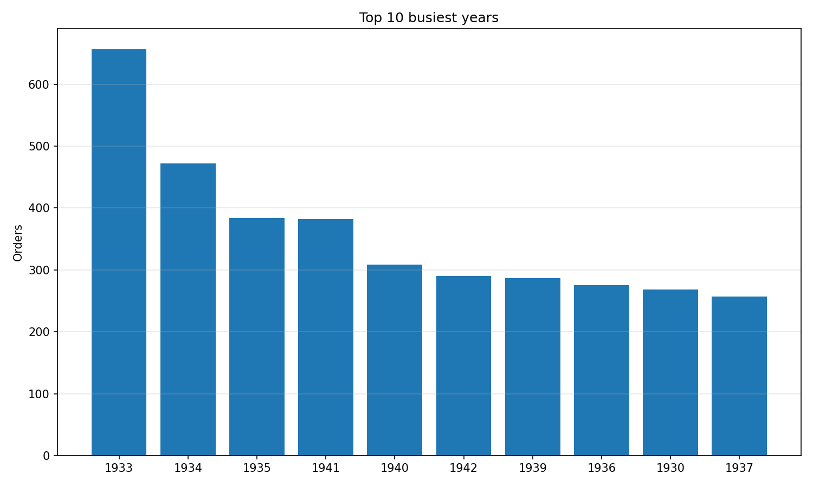
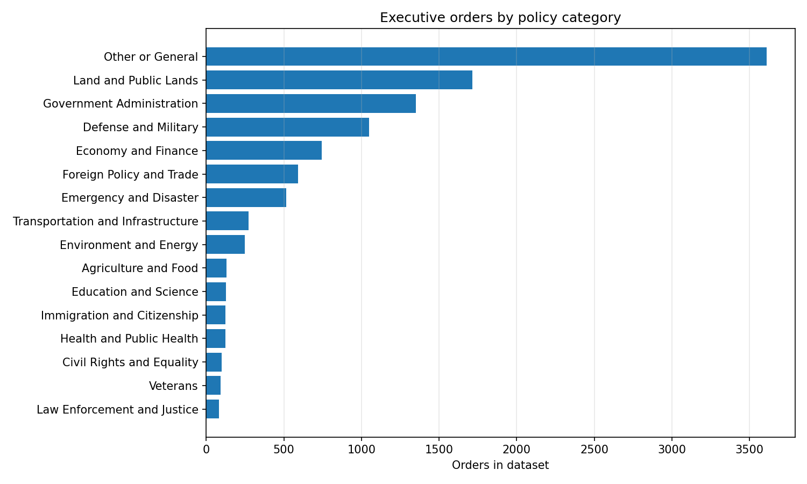
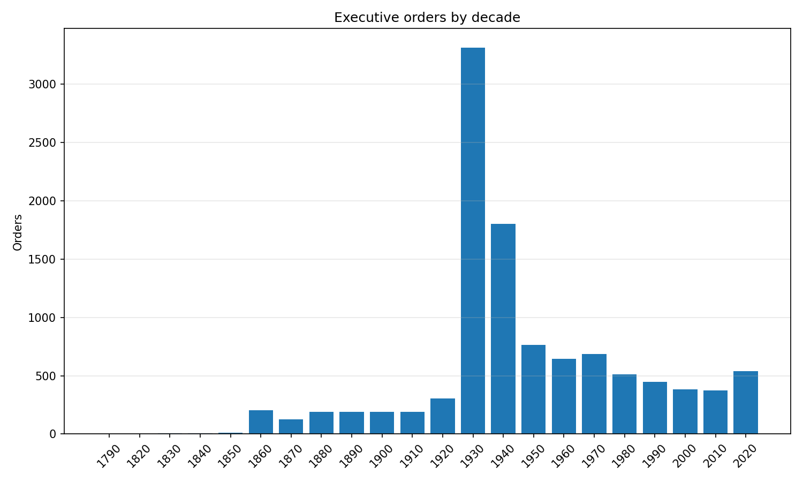
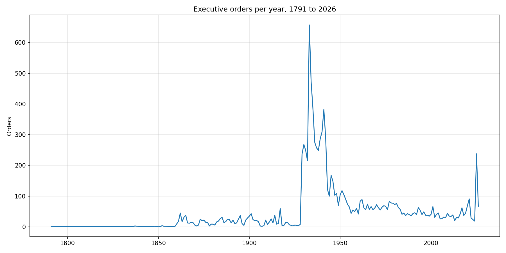
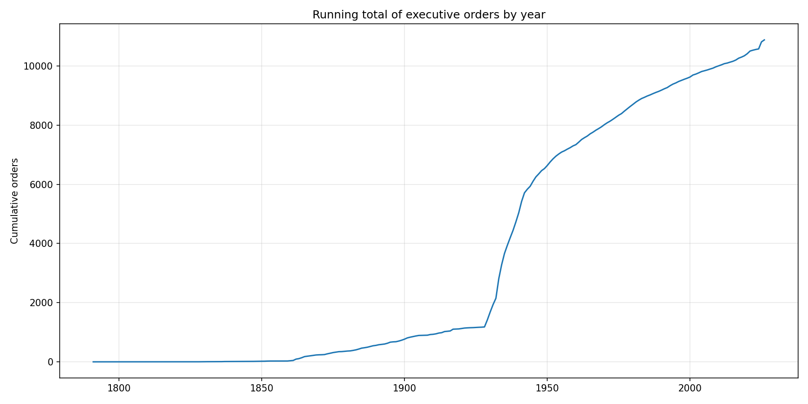
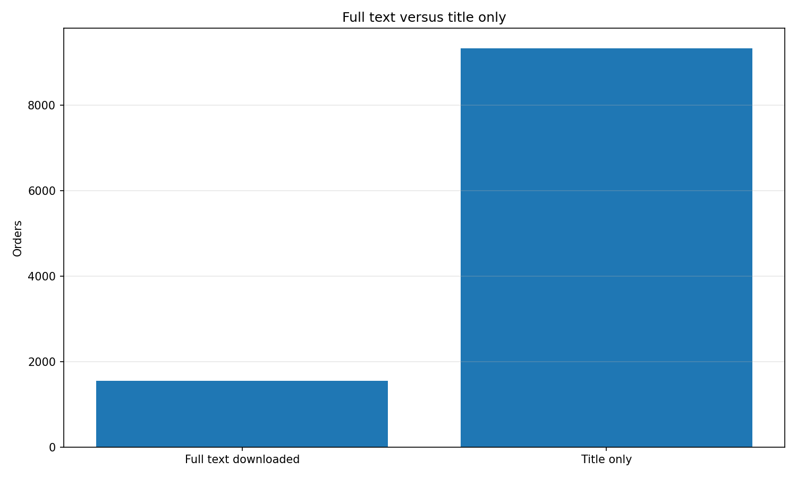
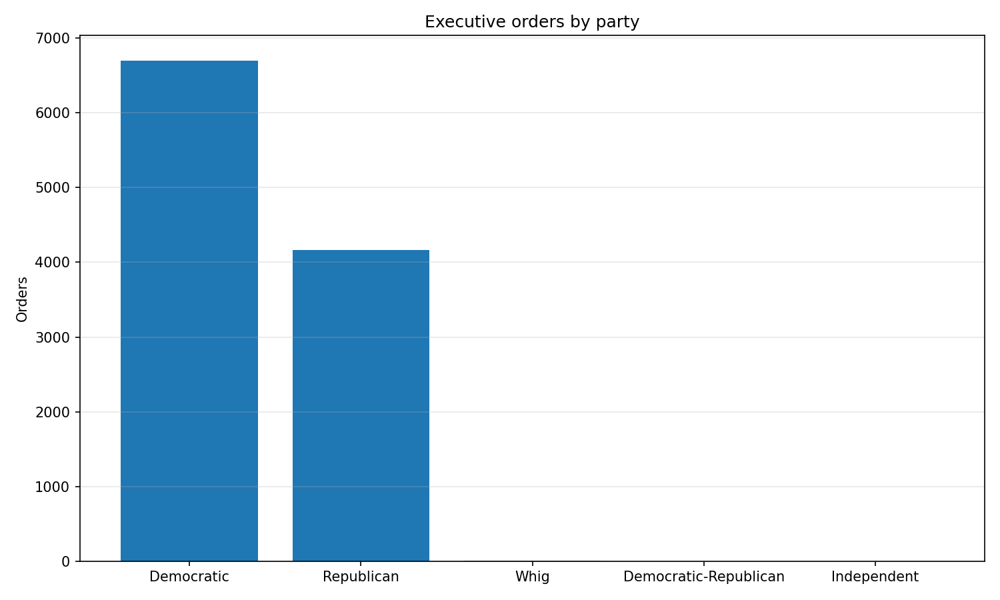

Learn SQL on a real dataset: every executive order in one table, from George Washington in 1791 to today. No toy data. No server. Just SQLite, six query files, and questions a recruiter would actually ask.
An executive order is a signed instruction from the President to the federal government. It has the force of law until a later President, Congress, or a court changes it. Presidents have used this tool since Washington, but not the same way in every era. Early orders were often short, routine paperwork. Later orders are more often about national policy.
How to run this project. Install the one requirement, then build the database, then run the query files in order:
pip install -r requirements.txt python3 scripts/load_database.py sqlite3 executive_orders.db < sql/01_foundations.sql
Repeat the last command for files 02 through 06. The database file is gitignored on purpose: you rebuild it any time with the load script. The full dataset is also in the companion project, with 10,879 rows from 1791-01-22 to 2026-10-22.
Read this first: the honest limits. This dataset is row level complete from Herbert Hoover onward. Before Hoover, it is a large titled sample, not a complete row list. Never quote a row count as if it were the published historical total for a pre-1929 president. Full text is recent only: 1,549 orders have full text, 9,330 are title only. Keyword categories are good for broad shares, not for labeling any single order: on a hard hand checked sample of 30 orders, they agreed with a human reading on 15, or 50 percent.
The question in plain words: What is in this table, and how do I look at just the rows I care about?
What the SQL does: SELECT picks columns. WHERE filters rows. ORDER BY sorts them. LIMIT keeps only the first few. DISTINCT removes duplicates. LIKE searches inside text.
The answer: The table holds 10,879 orders and 40 distinct president names. The first order is from 1791-01-22. The newest is EO 14438, signed 2026-10-22, titled Decreasing Housing Costs for the American People. There are 890 unnumbered early orders, from before numbering settled.
Follow along: 01_foundations.sql
The question in plain words: Who signed the most orders, and which years and topics dominate?
What the SQL does: COUNT counts rows. SUM, AVG, MIN, and MAX summarize numbers. GROUP BY splits rows into groups, one result row per group. HAVING filters groups, the way WHERE filters single rows.
The answer: Franklin D. Roosevelt leads with 3,725 orders, then Herbert Hoover with 1,004, then Harry S. Truman with 907. The busiest year is 1933 with 657 orders, then 1934 with 472. The busiest decade is the 1930s with 3,313 orders. The largest category is Other or General with 3,612 orders, then Land and Public Lands with 1,714, then Government Administration with 1,351.




Follow along: 02_aggregations.sql
The question in plain words: How do I combine this table with other tables, and how do I prove two tables agree?
What the SQL does: A JOIN matches rows from two tables on a shared value, here the president name or the year. INNER JOIN keeps only rows that match on both sides. LEFT JOIN keeps every row from the left table and fills NULL where the right table has no match, so "no match" stays visible. A self-join joins a table to itself with two aliases, to compare rows inside the same table.
The answer: The summary tables match the main table exactly: every president count and every year count differs by 0. The gap table tells the bigger story. Wilson shows 150 rows against a published total of 1,803. Coolidge shows 79 against 1,203. Theodore Roosevelt shows 104 against 1,081. Those gaps are source gaps, not findings about behavior. Five published names have zero dataset rows at all: John Adams, Thomas Jefferson, James Madison, and James Monroe, whose presidencies predate the start of the listing used here, plus William Henry Harrison, whose published total is 0 anyway.
Follow along: 03_joins.sql
The question in plain words: How do I rank things, track a running total, and compare each year with the year before, without collapsing rows?
What the SQL does: A window function computes across rows related to the current row, but keeps every row in the result. GROUP BY collapses groups. Window functions do not. RANK gives tied rows the same number. ROW_NUMBER never ties. LAG pulls the previous row's value, so you can compute change. A running total sums every row up to the current row.
The answer: Roosevelt is rank 1 with 3,725. The running total reaches 10,879 by 2026. The careful year over year query builds every calendar year from 1791 to 2026 first, so quiet years with zero orders are visible instead of hidden. The "latest order per president" query is a classic interview pattern: partition by president, order by date descending, keep row 1.


Follow along: 04_window_functions.sql
The question in plain words: How do I break a hard question into steps, and how do I sort rows into readable buckets?
What the SQL does: WITH gives a name to a step, called a common table expression, or CTE. Later steps use that name like a table. CASE WHEN tests rows one condition at a time and returns the first matching label, which is how you turn numbers into buckets such as "Very busy year" or "Short title".
The answer: Only 1 year in the whole table counts as very busy (500 or more orders): 1933. There are 14 busy years, 47 active years, and 125 quiet years. Titles split into 1,901 short titles, 4,811 medium titles, and 4,167 long titles. The 1930s hold about 30 percent of the whole archive.
Follow along: 05_ctes_and_case.sql
The question in plain words: Can you answer recruiter questions with one clear query each, and explain every line out loud?
What the SQL does: Each query combines the earlier steps: counting, ranking, joining, CTEs, and CASE. Nothing new is introduced here. The capstone proves the ladder worked.
The answers:


Follow along: 06_capstone.sql
If a recruiter asks what you did here, say this: I took a real archive of 10,879 executive orders, loaded it into SQLite, and answered questions with SQL alone, from basic filters up to window functions, CTEs, and joins. I checked my results against summary tables and published totals, and I stated the limits plainly: the early years are a sample, not complete rows, and the categories are broad buckets, not exact labels. The queries are in the sql/ folder, the outputs are in results/, and the charts are in charts/.
Local build only. Nothing here has been published, posted, or signed into anywhere.